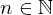

Expression of type SetOfAll¶
from the theory of proveit.numbers.number_sets.natural_numbers¶
In [1]:
import proveit
# Automation is not needed when building an expression:
proveit.defaults.automation = False # This will speed things up.
proveit.defaults.inline_pngs = False # Makes files smaller.
%load_expr # Load the stored expression as 'stored_expr'
# import Expression classes needed to build the expression
from proveit import n
from proveit.logic import SetOfAll
from proveit.numbers import Natural, greater, zero
In [2]:
# build up the expression from sub-expressions
expr = SetOfAll([n], n, domains = [Natural], condition = greater(n, zero))
Out[2]:
In [3]:
# check that the built expression is the same as the stored expression
assert expr == stored_expr
assert expr._style_id == stored_expr._style_id
print("Passed sanity check: expr matches stored_expr")
In [4]:
# Show the LaTeX representation of the expression for convenience if you need it.
print(expr.latex())
In [5]:
expr.style_options()
Out[5]:
In [6]:
# display the expression information
expr.expr_info()
Out[6]:
| core type | sub-expressions | expression | |
|---|---|---|---|
| 0 | Operation | operator: 1 operand: 3 | |
| 1 | Literal | ||
| 2 | ExprTuple | 3 | |
| 3 | Lambda | parameter: 16 body: 4 | |
| 4 | Conditional | value: 16 condition: 5 | |
| 5 | Operation | operator: 6 operands: 7 |  |
| 6 | Literal |  | |
| 7 | ExprTuple | 8, 9 | |
| 8 | Operation | operator: 10 operands: 11 |  |
| 9 | Operation | operator: 12 operands: 13 | |
| 10 | Literal |  | |
| 11 | ExprTuple | 16, 14 |  |
| 12 | Literal |  | |
| 13 | ExprTuple | 15, 16 | |
| 14 | Literal |  | |
| 15 | Literal |  | |
| 16 | Variable |  |